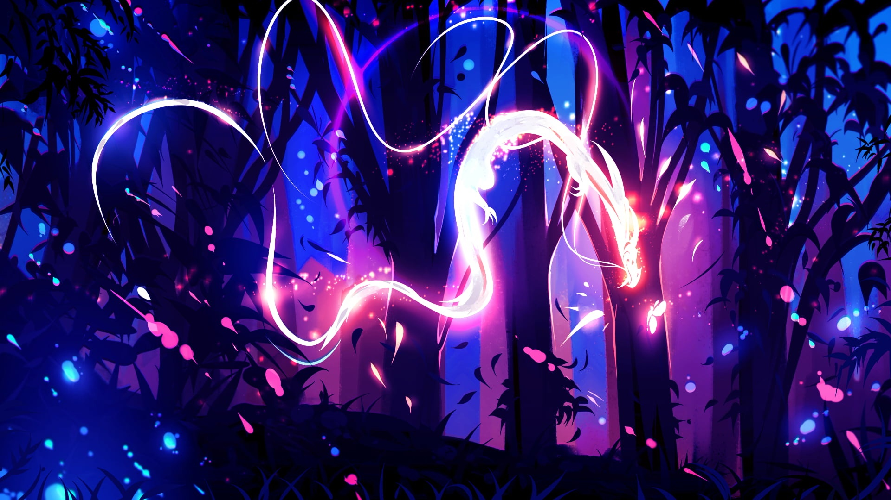
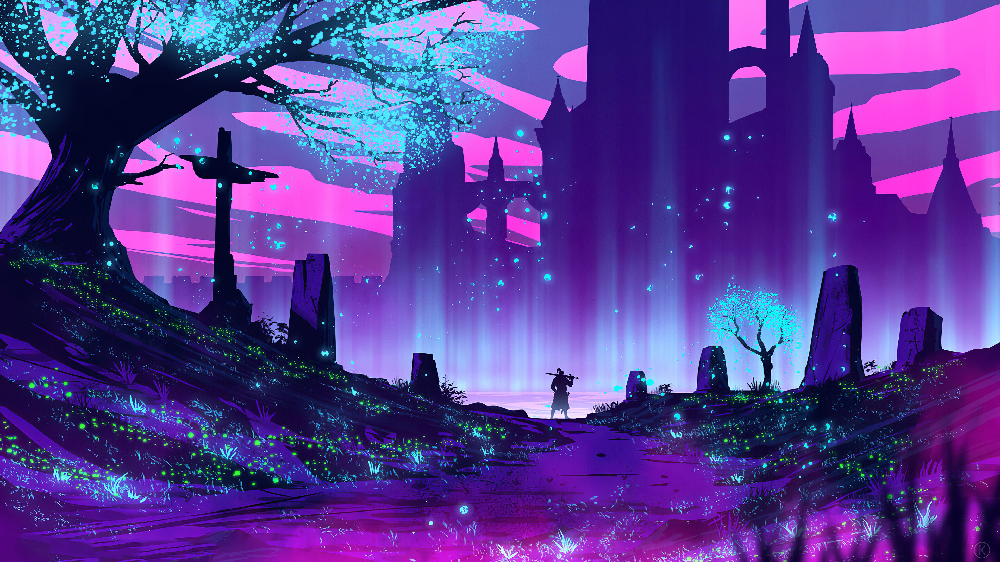

Imagens que eu tenho no meu computador que eu gosto
Papéis de parede

Esta imagem é um dragão no meio de uma floresta, eu gosto desta imagem tanto pelo dragão, quanto as cores que são bem chamativas, mas ao mesmo tempo discretas com um brilho muito lindo. Esta é atualmente o meu Background do PC.
Eu baixei ela por um aplicativo na microsoft store. Se voce quiser baixar ele tem vários wallpapers lindos para você baixar.

Esta é um samurai no meio de uma lago que fica em uma floresta, as cores que compõem esta imagem são chamativas na medida certa, ao mesmo tempo discretas e funcionam muito bem juntas. Esta eu também baixei ela por um aplicativo na microsoft store. Atualmente é a imagem da minha tela de bloqueio